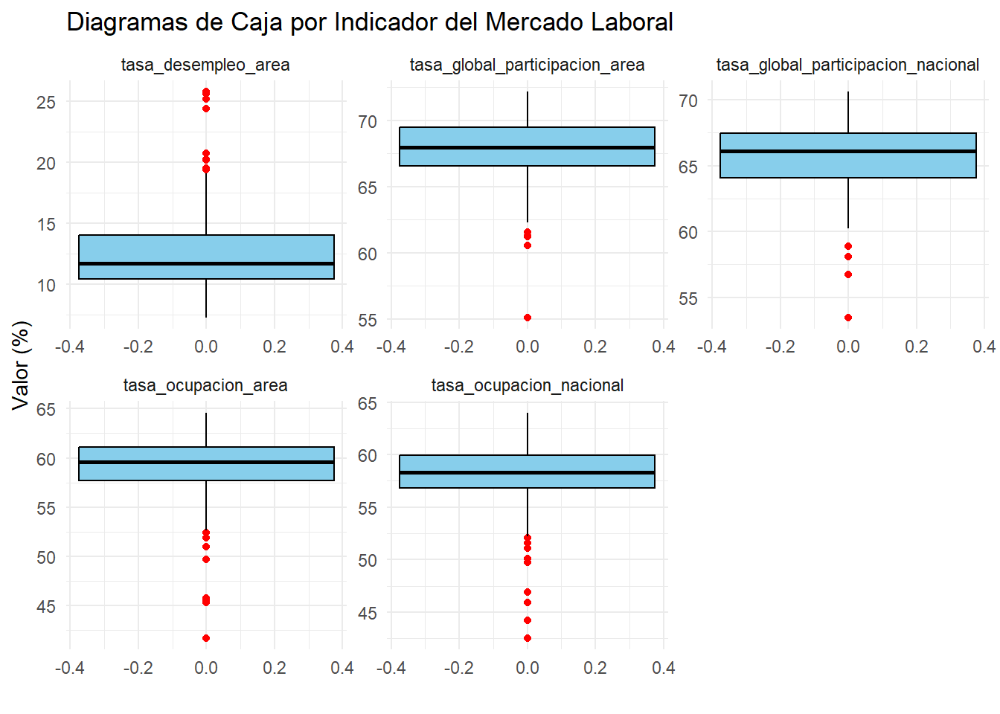

4 Analisis de las variables caracteristicas:
MLC %>%
summarise(
n = length(tasa_global_participacion_area),
media = mean(tasa_global_participacion_area),
ds = sd(tasa_global_participacion_area),
mediana = median(tasa_global_participacion_area),
minimo = min(tasa_global_participacion_area),
maximo = max(tasa_global_participacion_area),
Q1 = quantile(tasa_global_participacion_area, 0.25),
Q3 = quantile(tasa_global_participacion_area, 0.75),
IQR = IQR(tasa_global_participacion_area)) %>%
mutate(variable = "tasa_global_participacion_area") -> var_num_tgpa
MLC %>%
summarise(
n = length(tasa_global_participacion_nacional),
media = mean(tasa_global_participacion_nacional),
ds = sd(tasa_global_participacion_nacional),
mediana = median(tasa_global_participacion_nacional),
minimo = min(tasa_global_participacion_nacional),
maximo = max(tasa_global_participacion_nacional),
Q1 = quantile(tasa_global_participacion_nacional, 0.25),
Q3 = quantile(tasa_global_participacion_nacional, 0.75),
IQR = IQR(tasa_global_participacion_nacional)) %>%
mutate(variable = "tasa_global_participacion_nacional") -> var_num_tgpn
MLC %>%
summarise(
n = length(tasa_desempleo_area),
media = mean(tasa_desempleo_area),
ds = sd(tasa_desempleo_area),
mediana = median(tasa_desempleo_area),
minimo = min(tasa_desempleo_area),
maximo = max(tasa_desempleo_area),
Q1 = quantile(tasa_desempleo_area, 0.25),
Q3 = quantile(tasa_desempleo_area, 0.75),
IQR = IQR(tasa_desempleo_area)) %>%
mutate(variable = "tasa_desempleo_area")-> var_num_tsa
MLC %>%
summarise(
n = length(tasa_ocupacion_area),
media = mean(tasa_ocupacion_area),
ds = sd(tasa_ocupacion_area),
mediana = median(tasa_ocupacion_area),
minimo = min(tasa_ocupacion_area),
maximo = max(tasa_ocupacion_area),
Q1 = quantile(tasa_ocupacion_area, 0.25),
Q3 = quantile(tasa_ocupacion_area, 0.75),
IQR = IQR(tasa_ocupacion_area)) %>%
mutate(variable = "tasa_ocupacion_area") -> var_num_toa
MLC %>%
summarise(
n = length(tasa_ocupacion_nacional),
media = mean(tasa_ocupacion_nacional),
ds = sd(tasa_ocupacion_nacional),
mediana = median(tasa_ocupacion_nacional),
minimo = min(tasa_ocupacion_nacional),
maximo = max(tasa_ocupacion_nacional),
Q1 = quantile(tasa_ocupacion_nacional, 0.25),
Q3 = quantile(tasa_ocupacion_nacional, 0.75),
IQR = IQR(tasa_ocupacion_nacional)) %>%
mutate(variable = "tasa_ocupacion_nacional") -> var_num_ton
bind_rows(var_num_tgpa, var_num_tgpn, var_num_tsa, var_num_toa, var_num_ton ) %>%
select(variable, everything())## # A tibble: 5 × 10
## variable n media ds mediana minimo maximo Q1 Q3 IQR
## <chr> <int> <dbl> <dbl> <dbl> <dbl> <dbl> <dbl> <dbl> <dbl>
## 1 tasa_global_partici… 300 67.8 2.22 68.0 55.1 72.1 66.6 69.5 2.90
## 2 tasa_global_partici… 300 65.7 2.35 66.1 53.4 70.6 64.1 67.5 3.40
## 3 tasa_desempleo_area 300 12.6 3.15 11.7 7.27 25.8 10.4 14.0 3.57
## 4 tasa_ocupacion_area 300 59.2 3.10 59.6 41.7 64.6 57.7 61.1 3.42
## 5 tasa_ocupacion_naci… 300 58.1 2.85 58.3 42.5 64.0 56.8 60.0 3.12MLC_long <- MLC %>%
select(
tasa_global_participacion_area,
tasa_global_participacion_nacional,
tasa_desempleo_area,
tasa_ocupacion_area,
tasa_ocupacion_nacional
) %>%
pivot_longer(
cols = everything(),
names_to = "variable",
values_to = "valor"
)
ggplot(MLC_long, aes(y = valor)) +
geom_boxplot(
fill = "skyblue",
color = "black",
outlier.color = "red"
) +
facet_wrap(~variable, scales = "free") +
labs(
title = "Diagramas de Caja por Indicador del Mercado Laboral",
y = "Valor (%)",
x = ""
) +
theme_minimal()
Al analizar los boxplots presentados, observamos que la tasa de desempleo a nivel de área es el indicador con mayor variabilidad y valores más extremos, con una mediana cercana al 10% y un rango que se extiende hasta cerca del 20%, lo que refleja disparidades significativas en el desempleo local. En contraste, los indicadores de tasa de ocupación y tasa global de participación, tanto a nivel de área como nacional, presentan medianas centradas en cero y una dispersión mucho más contenida. Destaca especialmente que las versiones nacionales de estos indicadores muestran cajas más estrechas y bigotes más cortos que sus contrapartes de área, lo que sugiere que, a escala nacional, el mercado laboral tiende a ser más estable y homogéneo, mientras que a nivel local se experimentan fluctuaciones más pronunciadas y contextos laborales más diversos.